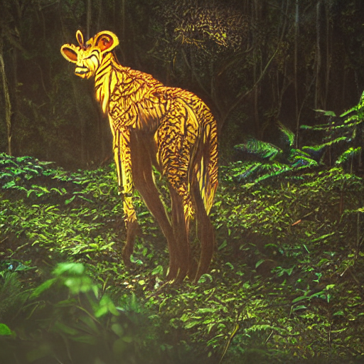

Specimen 001: Mire Lynx
keep moving >
name
Mire Lynx
phrase
"Krr-vala nesh torin."
play tape
page edge torn / archive smells like rain
Specimen 002: Ember Stag
< keep moving

name
Ember Stag
phrase
"Ula-vesh ka'rin."
play tape